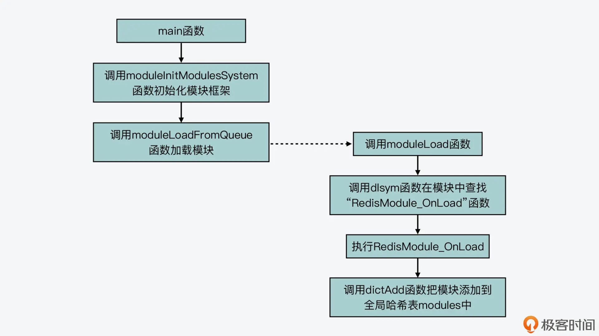
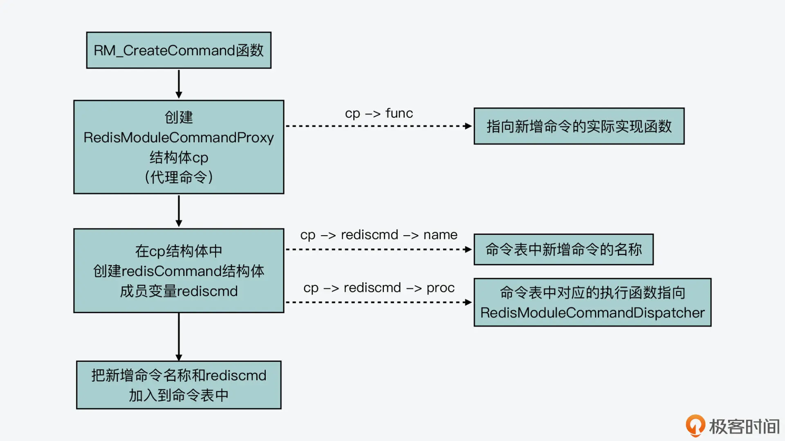

- 00 开篇词 阅读Redis源码能给你带来什么？.md.html
- 01 带你快速攻略Redis源码的整体架构.md.html
- 02 键值对中字符串的实现，用char还是结构体？.md.html
- 03 如何实现一个性能优异的Hash表？.md.html
- 04 内存友好的数据结构该如何细化设计？.md.html
- 05 有序集合为何能同时支持点查询和范围查询？.md.html
- 06 从ziplist到quicklist，再到listpack的启发.md.html
- 07 为什么Stream使用了Radix Tree？.md.html
- 08 Redis server启动后会做哪些操作？.md.html
- 09 Redis事件驱动框架（上）：何时使用select、poll、epoll？.md.html
- 10 Redis事件驱动框架（中）：Redis实现了Reactor模型吗？.md.html
- 11 Redis事件驱动框架（下）：Redis有哪些事件？.md.html
- 12 Redis真的是单线程吗？.md.html
- 13 Redis 6.0多IO线程的效率提高了吗？.md.html
- 14 从代码实现看分布式锁的原子性保证.md.html
- 15 为什么LRU算法原理和代码实现不一样？.md.html
- 16 LFU算法和其他算法相比有优势吗？.md.html
- 17 Lazy Free会影响缓存替换吗？.md.html
- 18 如何生成和解读RDB文件？.md.html
- 19 AOF重写（上）：触发时机与重写的影响.md.html
- 20 AOF重写（下）：重写时的新写操作记录在哪里？.md.html
- 21 主从复制：基于状态机的设计与实现.md.html
- 22 哨兵也和Redis实例一样初始化吗？.md.html
- 23 从哨兵Leader选举学习Raft协议实现（上）.md.html
- 24 从哨兵Leader选举学习Raft协议实现（下）.md.html
- 25 PubSub在主从故障切换时是如何发挥作用的？.md.html
- 26 从Ping-Pong消息学习Gossip协议的实现.md.html
- 27 从MOVED、ASK看集群节点如何处理命令？.md.html
- 28 Redis Cluster数据迁移会阻塞吗？.md.html
- 29 如何正确实现循环缓冲区？.md.html
- 30 如何在系统中实现延迟监控？.md.html
- 31 从Module的实现学习动态扩展功能.md.html
- 32 如何在一个系统中实现单元测试？.md.html
- 结束语 Redis源码阅读，让我们从新开始.md.html
- 捐赠
31 从Module的实现学习动态扩展功能
Redis 本身已经给我们提供了丰富的数据类型和数据读写功能，而且，Redis 实现了基于 IO 复用的网络框架、数据主从复制和故障恢复机制，以及数据切片集群，这些功能通常都是后端系统所需的核心功能。
那么，当我们在实际应用中，既希望能用上 Redis 已经实现的核心功能，又需要新增一些额外的命令或是数据类型时，该怎么办呢？
其实，Redis 从 4.0 版本开始，就提供了扩展模块（Module）的功能。这些扩展模块以动态链接库（so 文件）的形式加载到 Redis 中，我们可以基于 Redis 来新增功能模块。这些模块通常包括了新增的命令和数据类型，与此同时，这些数据类型对应的数据会保存在 Redis 数据库中，从而保证了应用程序对这些数据的高性能访问。
新增功能模块是后端系统开发过程中经常会遇到的问题，那么今天这节课，我就带你学习 Redis 是如何实现新增一个功能模块的。掌握了今天的课程内容，你就可以参考 Redis 的实现方案，给自己的系统添加相应的功能模块扩展框架，从而增加系统的灵活性。
下面，我们就先来了解下 Redis 的扩展模块框架的初始化操作。因为和 Redis 扩展模块框架相关的功能主要是在redismodule.h和module.c文件中定义和实现的，你可以在这两个文件中查找接下来要介绍的数据结构或函数。
模块框架的初始化
在 Redis 的入口 main 函数的执行流程中，会调用 moduleInitModulesSystem 函数（在 module.c 文件中）初始化扩展模块框架，如下所示：
int main(int argc, char **argv) {
…
moduleInitModulesSystem();
…}
这个 moduleInitModulesSystem 函数，主要是创建和初始化扩展模块框架运行所需的数据结构。这其中比较重要的初始化操作包括：
- 创建保存待加载模块的列表，这对应了全局变量 server 的 loadmodule_queue 成员变量；
- 创建保存扩展模块的全局哈希表 modules；
- 调用 moduleRegisterCoreAPI 函数注册核心 API。
这些操作的代码如下所示：
void moduleInitModulesSystem(void) {
…
server.loadmodule_queue = listCreate();
modules = dictCreate(&modulesDictType,NULL);
…
moduleRegisterCoreAPI();
…
}
这里，我们先来看下其中的 moduleRegisterCoreAPI 函数的作用。
这个函数先是在全局变量 server 中，创建两个哈希表成员变量 moduleapi 和 sharedapi，它们是分别用来保存模块向外暴露的 API 以及模块之间共享的 API 的。紧接着，这个函数会调用 REGISTER_API 宏，注册模块的核心 API 函数。
下面的代码展示了 moduleRegisterCoreAPI 函数的部分执行逻辑，你可以看到，其中就包含了调用 REGISTER_API 宏注册 Alloc、CreateCommand、ReplyWithLongLong、RepyWithError 这些 API 函数。
void moduleRegisterCoreAPI(void) {
server.moduleapi = dictCreate(&moduleAPIDictType,NULL); //创建哈希表保存模块核心API
server.sharedapi = dictCreate(&moduleAPIDictType,NULL); //创建哈希表保存模块共享API
REGISTER_API(Alloc); //注册Alloc API函数
…
REGISTER_API(CreateCommand); //注册CreateCommand API函数
…
REGISTER_API(ReplyWithLongLong); //注册ReplyWithLongLong API函数
REGISTER_API(ReplyWithError); //注册ReplyWithError API函数
...
}
这些 API 函数其实是 Redis 扩展模块框架自身已经实现好的，我们在开发扩展模块时都会用到它们。举个例子，当我们在开发新的扩展模块时，就会调用框架的 CreateCommand API，来创建新增的命令，以及调用 ReplyWithLongLong API 来给客户端返回结果。
那么接下来，我们再来具体看下 REGISTER_API 宏的实现，它其实是由 moduleRegisterApi 函数来实现的。moduleRegisterApi 函数会把“RedisModule_”开头的 API 函数，转换成“RM_”开头的 API 函数，并通过 dictAdd 函数，将 API 函数添加到全局的 moduleapi 哈希表中。
而在这个哈希表中，哈希项的 key 是 API 的名称，value 是这个 API 对应的函数指针。这样一来，当我们开发模块要用到这些 API 时，就可以通过 moduleapi 哈希表查找 API 名称，然后获得 API 函数指针并进行使用了。
下面的代码展示了 REGISTER_API 宏定义和 moduleRegisterApi 函数的实现，你可以看下。
//将moduleRegisterApi函数定义为REGISTER_API宏
#define REGISTER_API(name) \
moduleRegisterApi("RedisModule_" #name, (void *)(unsigned long)RM_ ## name)
int moduleRegisterApi(const char *funcname, void *funcptr) {
return dictAdd(server.moduleapi, (char*)funcname, funcptr); //将API名称和对应的函数指针添加到moduleapi哈希表中
}
这样，我们也就了解了扩展模块框架初始化时的工作，它主要是完成了运行所需数据结构的初始化，并把框架提供的 API 的名称和实现函数，添加到 moduleapi 哈希表中。
那么接下来，我们就具体来看下如何实现一个模块，并看看这个模块是如何工作的。
模块的实现和工作过程
我们先来看一个简单的模块实现例子。假设我们要新增一个模块“helloredis”，这个模块包含一个命令“hello”，而这个命令的作用就是返回“hello redis”字符串。
那么，简单来说，要开发这个新增模块，我们需要开发两个函数，一个是 RedisModule_OnLoad 函数，它会在模块加载时被调用，初始化新增模块，并向 Redis 扩展模块框架注册模块和命令。另一个是新增模块具体功能的实现函数，我们在这里把它命名为 Hello_NewCommand。
我们先来看初始化和注册新增模块的过程。
新增模块的初始化与注册
在 Redis 的入口 main 函数的执行流程中，在调用完 moduleInitModulesSystem 函数，完成扩展模块框架初始化后，实际上，main 函数还会调用 moduleLoadFromQueue 函数，来加载扩展模块。
moduleLoadFromQueue 函数会进一步调用 moduleLoad 函数，而 moduleLoad 函数会根据模块文件所在的路径、模块所需的参数来完成扩展模块的加载，如下所示：
void moduleLoadFromQueue(void) {
...
//加载扩展模块
if (moduleLoad(loadmod->path,(void **)loadmod->argv,loadmod->argc)
== C_ERR)
{...}
}
那么，在 moduleLoad 函数中，它会在我们自行开发的模块文件中查找“RedisModule_OnLoad”函数，并执行这个函数。然后，它会调用 dictAdd 函数，把成功加载的模块添加到全局哈希表 modules 中，如下所示：
int moduleLoad(const char *path, void **module_argv, int module_argc) {
...
//在模块文件中查找RedisModule_OnLoad函数
onload = (int (*)(void *, void **, int))(unsigned long) dlsym(handle,"RedisModule_OnLoad");
...
//执行RedisModule_OnLoad函数
if (onload((void*)&ctx,module_argv,module_argc) == REDISMODULE_ERR) {...}
...
dictAdd(modules,ctx.module->name,ctx.module); //把加载的模块添加到全局哈希表modules
}
我在这里画了张图，展示了 main 函数加载新模块的过程，你可以再回顾下。

从刚才介绍的 main 函数加载新增模块的过程中，你可以看到，模块框架会在模块文件中，会查找 RedisModule_OnLoad 函数。RedisModule_OnLoad 是每个新增模块都必须包含的函数，它是扩展模块框架加载新增模块的入口。通过这个函数，我们可以把新增的模块命令注册到 Redis 的命令表中，从而可以在 Redis 中使用新增命令。这个函数的原型如下所示：
int RedisModule_OnLoad(RedisModuleCtx *ctx, RedisModuleString **argv, int argc)
而当我们要实现 RedisModule_OnLoad 函数时，就要用到刚才介绍的扩展模块框架提供的 API 函数了。
首先，我们要调用 RedisModule_Init 函数（在 redismodule.h 文件中），来注册新增的模块，它的函数原型如下所示：
static int RedisModule_Init(RedisModuleCtx *ctx, const char *name, int ver, int apiver)
其中，第一个参数 ctx 是 RedisModuleCtx 结构体类型变量，这个结构体记录了模块的指针、执行模块命令的客户端，以及运行时状态等信息。第二个参数 name 表示的新增模块的名称，而第三和第四个参数表示的是 API 版本。
然后，对于我们刚才要实现的“helloredis”模块，我们就可以按如下代码来调用 RedisModule_Init 函数，实现模块的注册。
if (RedisModule_Init(ctx,"helloredis",1,REDISMODULE_APIVER_1)
== REDISMODULE_ERR) return REDISMODULE_ERR;
而具体的注册过程，我们可以看下 RedisModule_Init 函数的实现。这个函数的主要工作可以分成三步。
第一步是设置 RedisModule_GetApi 函数，让它等于 RedisModuleCtx 结构体中的函数指针 getapifuncptr。
第二步是调用 REDISMODULE_GET_API 宏，来获得扩展模块框架提供的 API 函数。这样一来，新增模块中就可以使用框架的 API 了。
这里，你需要注意下 REDISMODULE_GET_API 宏的定义，这个宏定义其实是使用了 RedisModule_GetApi 函数指针，如下所示：
#define REDISMODULE_GET_API(name) \
RedisModule_GetApi("RedisModule_" #name, ((void **)&RedisModule_ ## name))
而 RedisModule_GetApi 函数指针是通过 REDISMODULE_API_FUNC 这个宏定义来实现的。在这里，REDISMODULE_API_FUNC 宏的作用是把它的参数设置为函数指针，如下所示：
#define REDISMODULE_API_FUNC(x) (*x) //设置x为函数指针
那么，对于 RedisModule_GetApi 函数指针来说，它又进一步指向了 API 函数，它的参数就包括了 API 函数名称和指向 API 函数的指针。
int REDISMODULE_API_FUNC(RedisModule_GetApi)(const char *, void *); //设置RedisModule_GetApi为函数指针
我们再来看刚才介绍的 REDISMODULE_GET_API 宏，如下所示：
int REDISMODULE_API_FUNC(RedisModule_GetApi)(const char *, void *); //设置RedisModule_GetApi为函数指针
你会发现，这个宏会把传入的参数 name，传递给 RedisModule_GetApi 函数指针，而 RedisModule_GetApi 函数指针会将参数 name 和“RedisModule_”字符串拼接起来，这就组成了模块框架中以“RedisModule_”开头的 API 函数的名称了，从而可以获得同名 API 函数的指针。
所以，在 RedisModule_Init 函数的第一步和第二步，都是通过 RedisModule_GetApi 来获得 API 函数的指针的。
那么，在 RedisModule_Init 函数的第三步，它会调用 RedisModule_IsModuleNameBusy 函数，检查当前注册的新增模块名称是否已经存在。
如果这个模块已经存在了，那么它就会报错返回。而如果模块不存在，它就调用 RedisModule_SetModuleAttribs 函数，给新增模块分配一个 RedisModule 结构体，并初始化这个结构体中的成员变量。而 RedisModule 结构体正是用来记录一个模块的相关属性的。
下面的代码展示了 RedisModule_SetModuleAttribs 函数的部分执行逻辑，你可以看下。这里，你要注意的是，刚才我介绍的 moduleRegisterCoreAPI 函数，它在模块框架初始化时，已经把以“RedisModule_”开头的函数指向了以“RM_”开头的函数，所以，当你看到“RedisModule_”开头的函数时，就需要在 module.c 文件中，查找以“RM_”开头而后缀相同的函数。
void RM_SetModuleAttribs(RedisModuleCtx *ctx, const char *name, int ver, int apiver) {
RedisModule *module;
if (ctx->module != NULL) return;
module = zmalloc(sizeof(*module)); //分配RedisModule结构体的空间
module->name = sdsnew((char*)name); //设置模块名称
module->ver = ver; //设置模板版本
…
ctx->module = module; //在记录模块运行状态的RedisModuleCtx变量中保存模块指针
}
好了，到这里，RedisModule_Init 函数针对一个新增模块的初始化流程就执行完成了。下面的代码也展示了 RedisModule_Init 函数的主要执行逻辑，你可以再回顾下。
void *getapifuncptr = ((void**)ctx)[0];
RedisModule_GetApi = (int (*)(const char *, void *)) (unsigned long)getapifuncptr;
REDISMODULE_GET_API(Alloc);
…
REDISMODULE_GET_API(CreateCommand);
…
REDISMODULE_GET_API(ListPush);
REDISMODULE_GET_API(ListPop);
…
REDISMODULE_GET_API(CreateString);
…
//检查是否有同名的模块
if (RedisModule_IsModuleNameBusy && RedisModule_IsModuleNameBusy(name)) return REDISMODULE_ERR;
RedisModule_SetModuleAttribs(ctx,name,ver,apiver); //没有同名模块，则初始化模块的数据结构
return REDISMODULE_OK;
其实，从代码中你可以发现，RedisModule_Init 函数在初始化新增模块时，会从框架中获得很多键值对常规操作的 API 函数，比如 List 的 Push 和 Pop 操作、创建 String 操作等等。你可以进一步阅读 RedisModule_Init 函数，来了解新增模块能获得的 API。
那么，当我们调用 RedisModule_Init 函数，完成了新增模块的注册和初始化后，我们就可以调用 RedisModule_CreateCommand 函数来注册模块的新增命令。下面，我们就来看下这个执行过程。
新增命令的注册
对于我们刚才开发的新增模块来说，我们需要给它增加一个新命令“hello”，这主要就是通过在 RedisModule_OnLoad 函数中，调用 RedisModule_CreateCommand 函数来实现的。你可以先看看下面的代码，这部分代码实现了新增命令的注册。
int RedisModule_OnLoad(RedisModuleCtx *ctx, RedisModuleString **argv, int argc) {
…
if (RedisModule_CreateCommand(ctx,"hello", Hello_NewCommand, "fast",0, 0, 0) == REDISMODULE_ERR)
return REDISMODULE_ERR;
…}
从代码中，你可以看到，RedisModule_CreateCommand 的参数包括了新增的命令名称“hello”、这个命令对应的实现函数 Hello_NewCommand，以及这个命令对应的属性标记“fast”。
那么，现在我们就来看下 RedisModule_CreateCommand 的执行过程，就像刚才我给你介绍的，它实际对应的实现函数是以“RM_”开头的 RM_CreateCommand。
RM_CreateCommand 函数的原型如下所示，它的第二、三和四个参数就对应了刚才我提到的新增命令的名称、命令对应实现函数和命令标记。
int RM_CreateCommand(RedisModuleCtx *ctx, const char *name, RedisModuleCmdFunc cmdfunc, const char *strflags, int firstkey, int lastkey, int keystep)
而 RM_CreateCommand 函数的主要作用，是创建一个 RedisModuleCommandProxy 结构体类型的变量 cp。这个变量类似于新增命令的代理命令，它本身记录了新增命令对应的实现函数，与此同时，它又创建了一个 redisCommand 结构体类型的成员变量 rediscmd。
这里你需要注意的是，在 Redis 源码中，redisCommand 类型的变量对应了 Redis 命令表中的一个命令。当 Redis 收到客户端发送的命令时，会在命令表中查找命令名称，以及命令对应的 redisCommand 变量。而 redisCommand 结构体中的成员变量 proc，就对应了命令的实现函数。
struct redisCommand {
char *name; //命令名称
redisCommandProc *proc; //命令对应的实现函数
…
}
在刚才介绍的 cp 变量中，它创建了 redisCommand 类型的成员变量 rediscmd，并把它的 proc 变量设置为 RedisModuleCommandDispatcher 函数。
然后，RM_CreateCommand 函数会把 rediscmd 添加到 Redis 的命令表中，这样一来，当客户端发送新增命令时，Redis 会先从命令表中查找到，新增命令对应的执行函数是 RedisModuleCommandDispatcher，然后就会执行 RedisModuleCommandDispatcher 这个函数。而 RedisModuleCommandDispatcher 函数接着才会实际调用新增模块命令所对应的实现函数。
下图就展示了 RM_CreateCommand 函数添加代理命令时，代理命令和模块新增命令之间的关系，你可以看下。

下面的代码也展示了 RM_CreateCommand 函数创建代理命令，并在 Redis 命令表中添加代理命令的基本执行逻辑，你可以再回顾下。
struct redisCommand *rediscmd;
RedisModuleCommandProxy *cp; //创建RedisModuleCommandProxy结构体变量
sds cmdname = sdsnew(name); //新增命令的名称
cp = zmalloc(sizeof(*cp));
cp->module = ctx->module; //记录命令对应的模块
cp->func = cmdfunc; //命令对应的实现函数
cp->rediscmd = zmalloc(sizeof(*rediscmd)); //创建一个redisCommand结构体，对应Redis命令表中的命令
cp->rediscmd->name = cmdname; //命令表中的命令名称
cp->rediscmd->proc = RedisModuleCommandDispatcher; //命令表中命令对应的函数
dictAdd(server.commands,sdsdup(cmdname),cp->rediscmd);
…
这样，我们在开发新模块的 RedisModule_OnLoad 函数时，要完成的第二步操作，也就是调用 RedisModule_CreateCommand 函数，来完成新增命令在 Redis 命令表中的注册。
那么，你可以再来看看下面的代码，其中展示了到目前为止，我们开发的新增模块的代码内容。到这里，一个简单的 RedisModule_OnLoad 函数就开发完成了。
int RedisModule_OnLoad(RedisModuleCtx *ctx, RedisModuleString **argv, int argc) {
//初始化模块
if (RedisModule_Init(ctx,"helloredis",1,REDISMODULE_APIVER_1)
== REDISMODULE_ERR) return REDISMODULE_ERR;
//注册命令
if (RedisModule_CreateCommand(ctx,"hello", Hello_NewCommand, "fast",0, 0, 0) == REDISMODULE_ERR)
return REDISMODULE_ERR;
return REDISMODULE_OK;
}
接下来，我们就需要开发新增命令实际对应的实现函数了。
开发新增命令的实现函数
开发新增命令的实现函数，主要就是为了实现我们新增模块的具体功能逻辑。在刚才举的例子中，新增模块“helloredis”的命令“hello”，它的功能逻辑很简单，就是返回一个“hello redis”的字符串。
而我们刚才在调用 RedisModule_CreateCommand 函数注册新命令的实现函数时，注册的是 Hello_NewCommand 函数。所以，这里我们就是要实现这个函数。
下面的代码展示了 Hello_NewCommand 函数的逻辑，你能看到，它就是调用 RedisModule_ReplyWithString 向客户端返回“hello redis”字符串。
int Hello_NewCommand(RedisModuleCtx *ctx, RedisModuleString **argv, int argc) {
return RedisModule_ReplyWithString(ctx, “hello redis”);
}
另外从代码中你还可以看到，我们开发的模块可以调用扩展模块框架提供的 API 函数，来完成一定的功能。比如，在刚才的代码中，Hello_NewCommand 函数就是调用了 RedisModule_ReplyWithString 这个框架的 API 函数，来向客户端返回 String 类型的结果。
好了，到这里，我们就完成了一个简单的新增模块的开发。这个过程包括了开发用来初始化模块和注册新增命令的函数 RedisModule_OnLoad，以及实际实现模块功能的 Hello_NewCommand 函数。
那么最后，我们来看下当 Redis 收到模块命令后是如何执行的。
新增模块的命令执行
刚才我介绍过，main 函数在执行时，会调用 moduleLoadFromQueue 函数加载扩展模块。那么，当模块加载完成后，就可以接受它新增的命令了。
我在【第 14 讲】中给你介绍过一个命令的执行流程，对于扩展模块的新增命令来说，它也是按照这个流程来执行的。所以，当收到扩展模块的命令时，processCommand 函数会被调用，然后这个函数会在命令表中查找收到的命令。如果找到这个命令，processCommand 函数就会调用 call 函数执行这个命令。
而 call 函数是会根据客户端发送的命令，执行这个命令对应的 redisCommand 结构中的 proc 指针指向函数，如下所示：
void call(client *c, int flags) {
…
c->cmd->proc(c);
…
}
注意，我刚才介绍的那个 RM_CreateCommand 函数在注册新命令时，它在命令表中给新增命令注册的对应函数，是 RedisModuleCommandDispatcher，所以，当收到新增模块的命令时，也是执行 RedisModuleCommandDispatcher 函数。
而 RedisModuleCommandDispatcher 函数，会先获得刚才我介绍的代表代理命令的 RedisModuleCommandProxy 结构体的变量 cp，并调用 cp 的 func 成员变量。这里的 func 成员变量在 RM_CreateCommand 函数执行时，已经被赋值了新增命令的实际实现函数。这样一来，通过 RedisModuleCommandDispatcher 函数，新增模块的命令也就能正常执行了。
下面的代码展示了 RedisModuleCommandDispatche 函数的基本逻辑，你可以看下。
void RedisModuleCommandDispatcher(client *c) {
RedisModuleCommandProxy *cp = (void*)(unsigned long)c->cmd->getkeys_proc;
…
cp->func(&ctx,(void**)c->argv,c->argc);
…
}
好了，到这里，我们就了解了新增模块的命令是如何通过代理命令的实现函数 RedisModuleCommandDispatcher 来完成执行的了。这样一来，我们也就清楚了从模块自身的实现开发，到模块命令执行的整个过程。
小结
在今天的课程里，我给你介绍了 Redis 扩展模块框架的工作机制。我以一个简单的扩展模块为例，带你了解了扩展模块框架的初始化、新模块的初始化、新命令的注册与执行过程。那么在这个过程中，你需要重点掌握以下三个关键点。
一是，新增模块的程序中必须包含 RedisModule_OnLoad 函数，这是因为模块框架在加载模块时，会通过动态链接库操作函数 dlsym 在新增模块编译后的动态链接文件（so 文件）中查找 RedisModule_OnLoad 函数，并会执行这个函数。所以，我们开发扩展模块时，就要在 RedisModule_OnLoad 函数中使用 RedisModule_Init 函数初始化模块，以及使用 RedisModule_CreateCommand 函数注册命令。
二是，扩展模块框架在 Redis 命令表中并没有直接添加新增命令的实现函数，而是把新增命令的执行函数先设置为 RedisModuleCommandDispatcher，然后再由 RedisModuleCommandDispatcher 函数执行新增命令的实际实现函数。
三是，扩展模块框架自身通过“RM_”开头的 API 函数封装了很多 Redis 现有的操作功能，例如对不同数据类型的操作，给客户端回复不同类型的结果等。这方便了我们在开发新增模块时，复用 Redis 的已有功能。你可以进一步阅读 module.c 文件，了解扩展框架提供的具体 API 函数。
最后，前面总结的这三点内容，可以说既对我们开发扩展模块，了解它们运行机制有帮助，也给我们自己开发扩展模块框架提供了参考实现，我希望你能掌握好它们。
每课一问
你使用过哪些 Redis 的扩展模块，或者自行开发过扩展模块吗？欢迎在评论分享些你的经验。
© 2019 - 2023 Liangliang Lee. Powered by gin and hexo-theme-book.